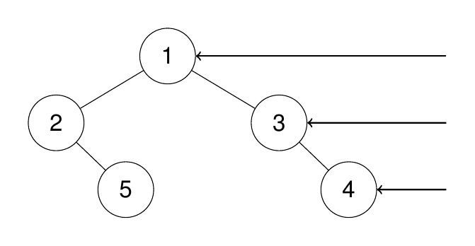
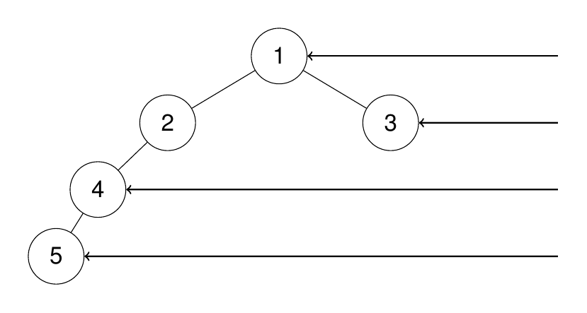

199. 二叉树的右视图
题目与约束
给定一个二叉树的 根节点 root，想象自己站在它的右侧，按照从顶部到底部的顺序，返回从右侧所能看到的节点值。
示例 1：
输入：root = [1,2,3,null,5,null,4] 输出：[1,3,4] 解释：

示例 2：
输入：root = [1,2,3,4,null,null,null,5] 输出：[1,3,4,5] 解释：

示例 3：
输入：root = [1,null,3] 输出：[1,3]
示例 4：
输入：root = [] 输出：[]
提示:
- 二叉树的节点个数的范围是
[0,100] -100 <= Node.val <= 100
核心不变量
每一层只记录最后访问或最先访问的右侧节点。
完整推导
思路推导
-
直觉与致命陷阱（右侧盲区）：
直觉：只管遍历右节点。
陷阱：假设树是这样的：根是 1，左孩子是 2，右孩子是空。2 的左孩子是 4。
如果你站在这棵树的右边，你能看到什么？你能直接透过空荡荡的右边，看到左侧的 1、2、4！所以，“右视图”绝对不等于“所有的右孩子”！
-
破局思路 A（层序遍历 BFS，最稳妥的保底解法）：
既然是“从上到下”看，这就完美契合了层序遍历的逻辑。
每一层有那么多节点，我站在右边，肯定只能看到这一层最右边的那一个（也就是队列里最后一个出队的节点），它把前面的兄弟全挡住了！
- 用队列一层一层地遍历。
- 在每层循环处理时，如果是当前层的最后一个节点（即
i == levelSize - 1），就把它塞进最终的结果列表里。
-
破局思路 B（深度优先 DFS，进阶的优化思路）：
层序遍历要维护队列，代码稍微有点多。有没有办法用递归瞬间秒杀？
有！我们平时做 DFS（前序遍历）是“中 -> 左 -> 右”。
如果我们把顺序反过来，变成“中 -> 右 -> 左”呢？ 这种神奇的遍历顺序保证了：我们在向下遍历每一层时，永远是优先访问该层最右侧的节点！ 我们只需要拿一个本子（记录当前的层数/深度），每次到达一个新深度时，遇到的第一个节点，绝对就是这一层最右边的节点！
Java 实现（DFS 优化思路版）
(在面试中写出 BFS 能及格，但写出下面这个 DFS 绝对能让面试官眼前一亮)
import java.util.ArrayList;
import java.util.List;
/**
* Definition for a binary tree node.
* public class TreeNode {
* int val;
* TreeNode left;
* TreeNode right;
* TreeNode() {}
* TreeNode(int val) { this.val = val; }
* TreeNode(int val, TreeNode left, TreeNode right) {
* this.val = val;
* this.left = left;
* this.right = right;
* }
* }
*/
class Solution {
// 结果集
List<Integer> res = new ArrayList<>();
public List<Integer> rightSideView(TreeNode root) {
// 从根节点开始，根节点的深度定义为 0
dfs(root, 0);
return res;
}
private void dfs(TreeNode node, int depth) {
// 终止条件：走到空节点了
if (node == null) {
return;
}
// 🌟 核心魔法：判断当前节点是否是该层被访问的“第一人”
// 因为我们是“中->右->左”遍历，如果当前深度 depth 等于结果集的大小，
// 说明这一层还没有任何人被加进结果集，当前节点就是这一层最右边的节点！
if (depth == res.size()) {
res.add(node.val);
}
// 优先遍历右子树（让右边的节点先占领结果集）
dfs(node.right, depth + 1);
// 然后再遍历左子树（左边的节点即使到了同一层，因为深度已经等于 res.size()，就加不进去了，完美模拟了“被遮挡”）
dfs(node.left, depth + 1);
}
}
复杂度
- 时间复杂度：O(N)。每个节点仅仅被访问了一次。
- 空间复杂度：O(H)。H 是树的高度。空间消耗来自于递归的系统调用栈。相比于 BFS（最坏情况下队列需要存储 N/2 个节点），DFS 的空间复杂度在树比较宽泛时表现更优秀。
- 逻辑校验：“遮挡效应”是如何在代码里体现的？
- 看上面的 DFS 代码，假设深度为 2 的那一层，有右节点
A和左节点B。 - 程序会先跑到
A那里。此时depth == 2，且res.size() == 2（因为前面 0 层和 1 层各塞了一个），于是A被成功塞进res。此时res.size()变成了 3。 - 等程序回溯再去遍历左侧的
B时，depth依然是 2，但此时res.size()已经是 3 了！2 == 3为假，所以B不会被加入。这就完美地在逻辑上实现了“右节点遮挡左节点”！
力扣原题
其他语言实现
C++ 实现
实现来源：经典解法实现
- BFS 层序遍历，每层从左到右入队
- 每层最后一个出队的节点就是右视图答案
- 队内子节点继续扩展下一层
class Solution {
public:
vector<int> rightSideView(TreeNode* root) {
vector<int> right;
if (!root) return right;
queue<TreeNode*> q; q.push(root);
while (!q.empty()) {
int n = q.size();
for (int i = 0; i < n; i++) {
TreeNode* cur = q.front(); q.pop();
if (i == n - 1) right.push_back(cur->val); // 本层最后一个
if (cur->left) q.push(cur->left);
if (cur->right) q.push(cur->right);
}
}
return right;
}
};
Python 实现
实现来源：经典解法实现
- BFS 层序遍历，每层从左到右入队
- 每层最后一个出队的节点就是右视图答案
- 队内子节点继续扩展下一层
from collections import deque
class Solution:
def rightSideView(self, root: TreeNode) -> List[int]:
right = []
if not root: return right
q = deque([root])
while q:
for i in range(len(q)):
cur = q.popleft()
if i == len(q) - 1: # 本层最后一个之前 len 不变
pass
if cur.left: q.append(cur.left)
if cur.right: q.append(cur.right)
right.append(cur.val) # 本层循环结束时的 cur 即最后一个
return right
Go 实现
实现来源：经典解法实现
- BFS 层序遍历，每层从左到右入队
- 每层最后一个出队的节点就是右视图答案
- 队内子节点继续扩展下一层
func rightSideView(root *TreeNode) []int {
right := []int{}
if root == nil { return right }
queue := []*TreeNode{root}
for len(queue) > 0 {
n := len(queue)
for i := 0; i < n; i++ {
cur := queue[0]
queue = queue[1:]
if i == n-1 { right = append(right, cur.Val) }
if cur.Left != nil { queue = append(queue, cur.Left) }
if cur.Right != nil { queue = append(queue, cur.Right) }
}
}
return right
}
C 实现
实现来源：经典解法实现
- BFS 层序遍历，每层从左到右入队
- 每层最后一个出队的节点就是右视图答案
- 队内子节点继续扩展下一层
int* rightSideView(struct TreeNode* root, int* returnSize) {
*returnSize = 0;
if (!root) return NULL;
int* right = malloc(sizeof(int) * 128);
struct TreeNode* queue[256]; int head = 0, tail = 0;
queue[tail++] = root;
while (head < tail) {
int n = tail - head;
for (int i = 0; i < n; i++) {
struct TreeNode* cur = queue[head++];
if (i == n - 1) right[(*returnSize)++] = cur->val;
if (cur->left) queue[tail++] = cur->left;
if (cur->right) queue[tail++] = cur->right;
}
}
return right;
}